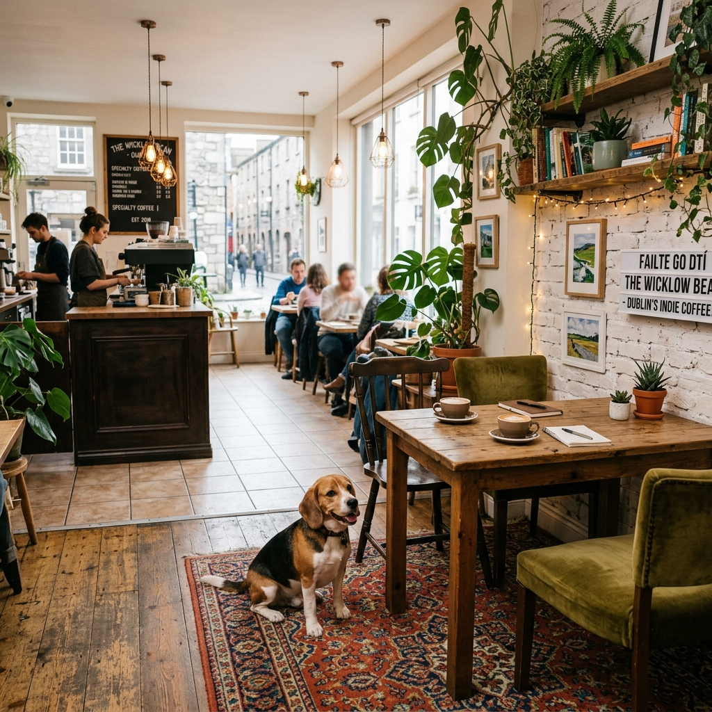
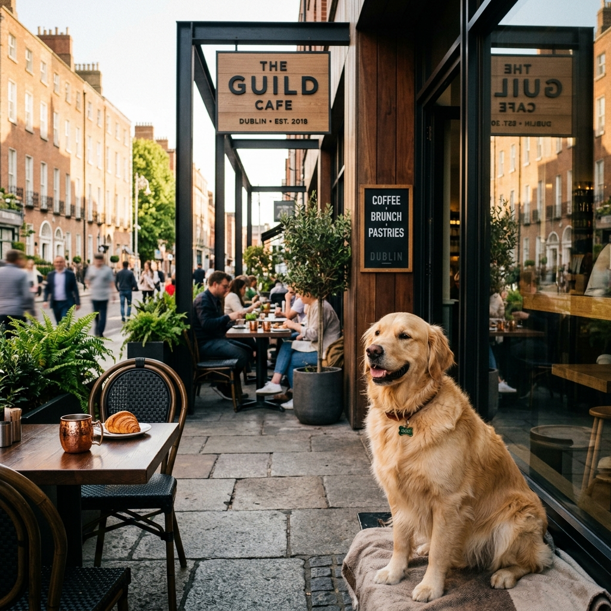
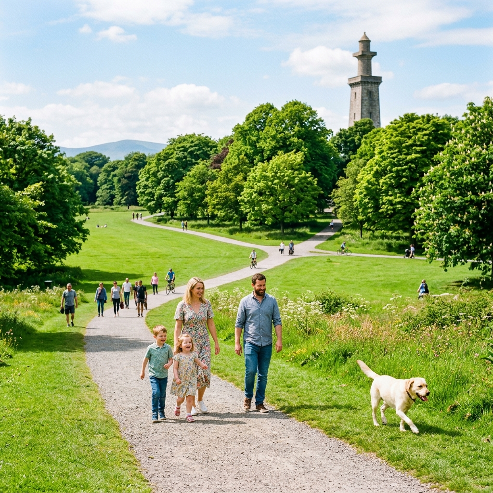

Pawsitive Verified
Two Pups Coffee
Premium indie coffee shop. Specializing in inclusive indoor seating for all breeds.

The verified directory for pet-inclusive cafes, pubs, and transit. Experience the "Paw-Pound" economy without spatial friction.
Discover our top-rated locations with rigorous Micro-Accessibility data audits.

Premium indie coffee shop. Specializing in inclusive indoor seating for all breeds.

Real-time off-leash schedule aligned with local council bylaws. Beautiful, sprawling greenery.
Sync transit schedules with dynamic map data to find car-free escapes.
Sign up to our proprietary 'Weekend Guide' newsletter designed to help navigate the spatial friction of Dublin.